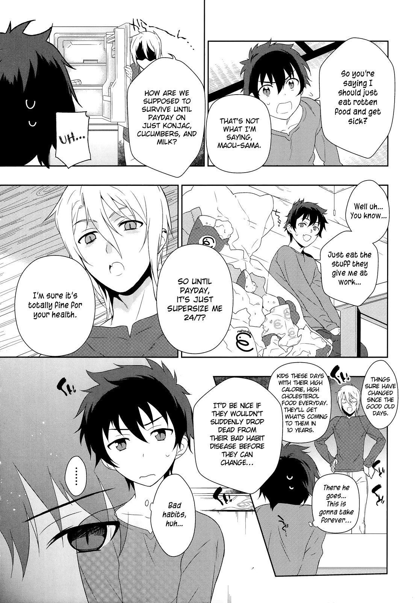

Hataraku Maou-sama!
by Satoshi Wagahara
Synopsis
After being defeated by the Hero Emilia, the Demon Lord Satan escapes to modern-day Tokyo with his loyal general, Alsiel. Stripped of most of his magical powers, Satan adopts the human identity of Sadao Maou and gets a part-time job at a fast-food restaurant to survive. Just as he begins adjusting to ordinary life, his past catches up with him in unexpected ways.
Chapter 1

The once-feared Demon Lord finds himself in a world without magic, where paying rent and buying food are more urgent than conquering kingdoms. With Alsiel by his side, he begins a new life in a small Tokyo apartment and takes a job at MgRonald's.
Although Maou tries to live like an ordinary human, his ambitions and demonic instincts still show through. Meanwhile, the Hero Emilia has followed him to Earth, setting the stage for a strange rivalry filled with comedy, supernatural encounters, and everyday struggles.
— End of chapter —